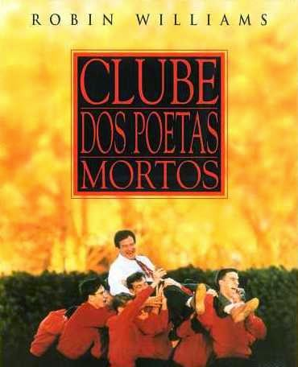
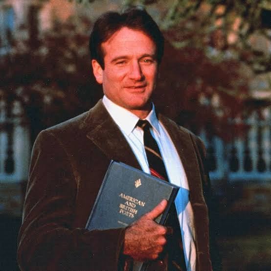
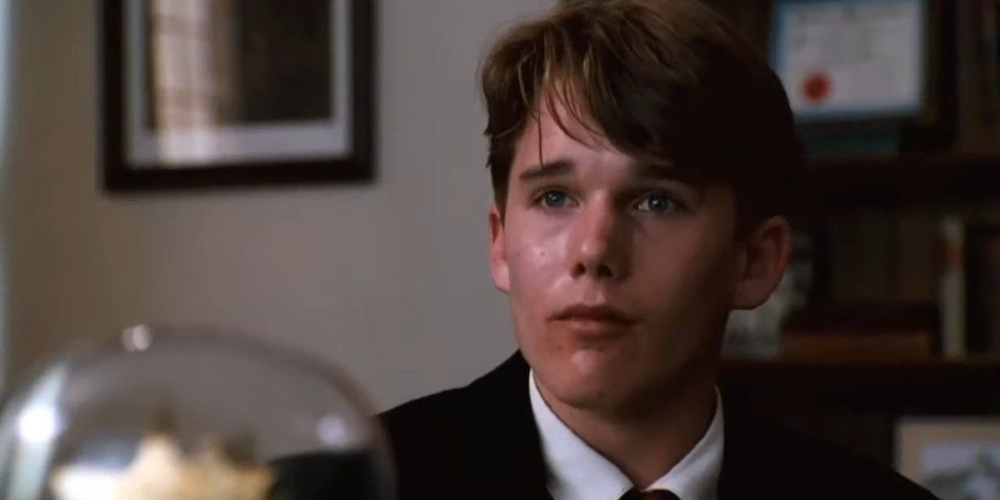
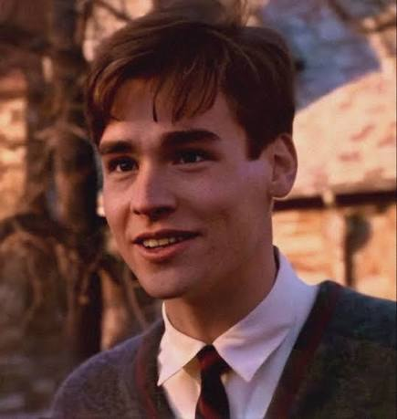

Olá, chamo-me Luísa Correia e neste blog vou apresentar-vos um dos melhores filmes de todos os tempos, o Clube dos Poetas Mortos.

Clica aqui para ver o trailer deste filme!
Na tradição de um colégio interno ultra-conservador, o novo professor de literatura John Keating revoluciona a rotina dos alunos ao ensinar o lema "Carpe Diem" e a importância de pensarem por si próprios. Inspirados por essa filosofia transformadora, os estudantes decidem ressuscitar um clube secreto de poesia numa gruta próxima do colégio. Contudo, à medida que a paixão dos jovens pela arte entra em rota de colisão com as exigências rígidas da escola e das suas famílias, torna-se cada vez mais difícil equilibrar a liberdade pessoal e o cumprimento das regras... e as consequências desta pressão mudarão as suas vidas para sempre.


